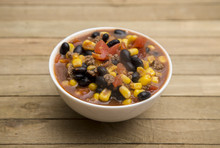

Taco Soup

Description
Taco Soup is a delicious, easy, and cheap recipe.
Using canned vegetables makes it easy to stock up
ingredients to make sure you'll always have a quick
dinner waiting in your pantry. Serve it with corn chips
sour cream, and cheese to your liking.
Ingredients
- 1 Can of Black Beans
- 1 Can of Chili Beans
- 1 Can of Sweet Corn
- 1 Can of Diced Tomatoes
- 1 Can of Diced Tomatoes with Green Chilis
- Corn Chips
- Shredded Cheese
- Sour Cream
Steps
- Open all the cans.
- Do not drain them.
- Pour them into a pot on high heat and bring to a boil.
- Reduce heat and simmer for 10 minutes.
- Serve over corn chips and top with cheese and sour cream.